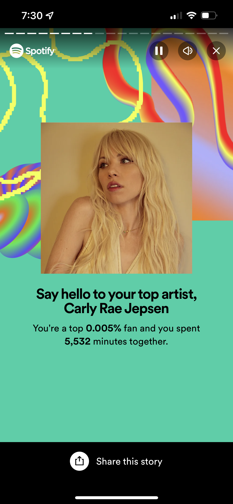

My World of Music
Music acts as a sort of motivator and emotional boost for me. Though I don't need music to regulate my emotions necessarily, I find great joy in playing my favorite artists, even if I was previously in a bad mood. My favorite times to listen to music are when I'm cooking, playing games, doing homework (though I play more chill music in this case), and I am even guilty of listening to and singing along to songs in the shower.
In general, I enjoy music one can dance to (though I don't physically dance, I find myself humming along or tapping my body, a more metaphorical type of dancing). My favorite genre of music is pop, though within this genre I enjoy a mix of pop with disco, funk, and R&B. Currently, my favorite artists are Jessie Ware, Kylie Minogue, Carly Rae Jepsen (I was a top 0.005% CRJ listener on Spotify Wrapped in 2023!), and Rina Sawayama, though I find my Spotify playlists filled with many different artists.
